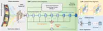
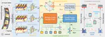
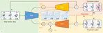

CCF A 2025 PHI: Bridging Domain Shift in Long-Term Action Quality Assessment via Progressive Hierarchical Instruction Long-term Action Quality Assessment (AQA) aims to evaluate the quantitative performance of actions in long videos. However, existing … Kanglei Zhou, Hubert P. H. Shum, Frederick W. B. Li, Xingxing Zhang, Xiaohui Liang Posted May 27, 2025 Journal Article TIP 2025 CCF A PDF Cite DOI GitHub arXiv  Adaptive Score Alignment Learning for Continual Perceptual Quality Assessment of 360-Degree Videos in Virtual Reality Virtual Reality Video Quality Assessment (VR-VQA) aims to evaluate the perceptual quality of 360-degree videos, which is crucial for … Kanglei Zhou, Zikai Hao, Liyuan Wang, Xiaohui Liang Posted Jan 27, 2025 Journal Article IEEE VR 2025 - TVCG Core A* CCF A PDF Cite DOI GitHub arXiv Bilibili Oral Presentation 2024 CoFInAl: Enhancing Action Quality Assessment with Coarse-to-Fine Instruction Alignment Action Quality Assessment (AQA) is pivotal for quantifying actions across domains like sports and medical care. Existing methods often … Kanglei Zhou, Junlin Li, Ruizhi Cai, Liyuan Wang, Xinxing Zhang, Xiaohui Liang Posted Apr 18, 2024 Conference Paper IJCAI 2024 Core A* CCF A PDF Cite DOI GitHub arXiv  2023 Multi-Task Spatial-Temporal Graph Auto-Encoder for Hand Motion Denoising Kanglei Zhou, Hubert P. H. Shum, Frederick W. B. Li, Xiaohui Liang Posted Nov 28, 2023 Journal Article TVCG CCF A PDF Cite DOI GitHub Bilibili  A Video-Based Augmented Reality System for Human-in-the-Loop Muscle Strength Assessment of Juvenile Dermatomyositis As the most common idiopathic inflammatory myopathy in children, juvenile dermatomyositis (JDM) is characterized by skin rashes and … Kanglei Zhou, Ruizhi Cai, Yue Ma, Qingqing Tan, Xinning Wang, Jianguo Li, Hubert P. H. Shum, Frederick W. B. Li, Song Jin, Xiaohui Liang Posted May 11, 2023 Journal Article IEEE VR - TVCG Core A* CCF A PDF Cite DOI Bilibili Oral Presentation (~10% for TVCG)